Ver Ejemplo
Ver Ejemplo  Descargar
DescargarTemplate de Informe en Latex


- Empezando con el template
- Configurando el documento
- Añadiendo integrantes, profesores, auxiliares y fechas
- Funciones propias del template
-
Configurar el template
- Configuraciones generales
- Estilo de portada y header-footer
- Márgenes de la página
- Configuración de las leyendas - caption
- Configuración del índice
- Configurar los colores del documento
- Márgenes de las figuras
- Configuración del anexo, citas y referencias
- Configuración de los títulos
- Nombres de los elementos
- Opciones del pdf
- Links de interés
- Librerías utilizadas
- Autor
Este proyecto corresponde a un template para confeccionar geniales informes en
 , contiene múltiples funciones para insertar imágenes, fórmulas, párrafos y títulos de forma sencilla, sin tener que recurrir a las largas instrucciones
que ofrece Latex por defecto.
, contiene múltiples funciones para insertar imágenes, fórmulas, párrafos y títulos de forma sencilla, sin tener que recurrir a las largas instrucciones
que ofrece Latex por defecto.
Para crear un informe con este template debes primero editar la información del documento (título, nombre de la universidad, etc) en la sección INFORMACIÓN DEL DOCUMENTO del archivo principal main.tex, luego editar la tabla de datos de la portada en la sección INTEGRANTES, PROFESORES Y FECHAS y por último empezar a escribir tu documento en la sección del RESUMEN O ABSTRACT o en la sección principal del documento INICIO DEL DOCUMENTO .
Existe además una versión compacta en donde se encuentra todo el código en un sólo archivo si es que no prefieres los archivos por separado. Para ver más información sobre cómo utilizar las funciones exclusivas del template, o cómo configurar a gusto el template, visita el resto de las secciones de este manual.
ATENCIÓN: Para compilar el template es necesario utilizar PDFLatex, no se da soporte a otros compiladores como xelatex, lualatex, etc.
Configurando el documento
Para configurar el documento (título, nombre de la universidad, curso, etc.) se deben modificar las variables definidas en el bloque de INFORMACIÓN DEL DOCUMENTO al principio del archivo principal, estas variables son del estilo:\def\nombreVariable {Valor}
Si por ejemplo tu informe no tiene un tema, debes dejar el valor en blanco, pero no eliminar la variable.
- \titulodelinforme: Título del informe.
- \temaatratar: Tema a tratar.
- \autordeldocumento: Nombre del autor o grupo, no es usado en la portada.
- \nombredelcurso: Curso/Ramo referido al informe.
- \codigodelcurso: Código del curso.
- \nombreuniversidad: Universidad, instituto, etc.
- \nombrefacultad: Facultad relacionada a la universidad, instituto, etc.
- \departamentouniversidad: Departamento de la universidad.
-
\imagendeldepartamento: Imagen del departamento o universidad a usar en la portada, estos se pueden encontrar en la carpeta
/images/departamentos/. Imágenes disponibles:
- adh: Área de Humanidades.
- das: Departamento de Astronomía.
- dcc: Departamento de Ciencias de la Computación.
- dfi: Departamento de Física.
- dgf: Departamento de Geofísica.
- dic: Departamento de Ingeniería Civil.
- dic2: Departamento de Ingeniería Civil (otra versión).
- die: Departamento de Ingeniería Eléctrica.
- dii: Departamento de Ingeniería Industrial.
- dii2: Departamento de Ingeniería Industrial (otra versión).
- dim: Departamento de Ingeniería Matemática.
- dimec: Departamento de Ingeniería Mecánica.
- diqbt: Departamento de Ingeniería Química y Biotecnología.
- fcfm: Facultad de Ciencias Físicas y Matemáticas.
- fcfm2: Sólo el logo de la Facultad de Ciencias Físicas y Matemáticas.
- geo: Departamento de Geología.
- minas: Departamento de Ingeniería en Minas.
- uchile: Escudo de la Universidad de Chile.
- uchile2: Sólo el escudo de la Universidad de Chile.
- uchile3: Escudo en negro de la Universidad de Chile.
- \imagendepartamentoescala: Escala de la imagen a usar.
- \localizacionuniversidad: Ciudad o región en donde se ubica la universidad o instituto.
Añadiendo integrantes, profesores, auxiliares y fechas
Esta información de la portada se encuentra en la sección INTEGRANTES, PROFESORES Y FECHAS del archivo principal (main.tex), en ella se encuentra una tabla la cual contiene la información de los integrantes, profesores, auxiliares, auxiliar de laboratorio, fecha de entrega y realización, etc.
Funciones propias del template
También es posible añadir fórmulas, párrafos, figuras y otros elementos de forma sencilla, utilizando funciones especiales definidas en el template.
-
Insertar párrafos
Para esto existen las siguientes funciones:
-
\newp: Sencilla forma de añadir un nuevo párrafo.
Este es un parrafo.
\newp Este es otro. -
\newpar{Párrafo}: Inserta un nuevo párrafo con un salto de linea al terminar.
\newpar{Este es un parrafo.}
\newpar{Este es otro.} -
\newparnl{Párrafo}: Inserta un nuevo párrafo sin un salto de linea al terminar.
\newparnl{Este es un parrafo sin salto de línea.}
\newparnl{Este es otro párrafo sin salto de línea.} -
\quotes{Texto}: Función simplificada para insertar "citas".
Así se insertan las \quotes{cítas} de manera sencilla.
-
\newp: Sencilla forma de añadir un nuevo párrafo.
-
Añadir una imagen
Las funciones para añadir imágenes requieren del nombre de la imagen (el archivo almacenado en el directorio definido por la configuración \defaultimagefolder, por defecto la carpeta images/), sus parámetros y la leyenda (la cual es opcional).
Los parámetros pueden ser scale=0.5, width=5cm, width=50%, angle=45, etc.
-
\insertimage[Label (opcional)]{Archivo}{Parámetros}{Leyenda}: Inserta una simple imagen.
\insertimage[]{ejemplos/test-image}{width=10cm}{Descripción de la imagen}
-
\insertimageboxed[Label (opcional)]{Archivo}{Parámetros}{Ancho de la línea}{Leyenda}: Inserta
una imagen recuadrada.
\insertimageboxed[\label{img-1}]{ejemplos/test-image}{scale=0.5}{0.5}{}
-
\insertdoubleimage[Label (opcional)]{Dirección de la imagen 1}{Parámetros 1}{Leyenda 1}{Dirección de la imagen 2}{Parámetros 2}{Leyenda 2}{Leyenda general}:
Inserta dos imágenes en un sólo elemento.
\insertdoubleimage[\label{img-double-1}]{ejemplos/test-image}{scale=0.4}{Descripción A}{ejemplos/test-image-wrap}{width=5cm}{Descripción B}{Descripción general de las imágenes}
-
\insertdoubleeqimage[Label (opcional)]{Dirección de la imagen 1}{Leyenda 1}{Dirección de la imagen 2}{Leyenda 2}{Parámetros generales}{Leyenda general}:
Inserta dos imágenes en un sólo elemento utilizando los mismos parámetros (estilos de imagen).
\insertdoubleeqimage[\label{img-equal}]{ejemplos/test-image}{Descripción A}{ejemplos/test-image-wrap}{Descripción B}{height=5cm}{Descripción general de las imágenes}
-
\inserttripleimage[Label (opcional)]{Dirección de la imagen 1}{Parámetros 1}{Dirección de la imagen 2}{Parámetros 2}{Dirección de la imagen 3}{Parámetros 3}{Leyenda general}:
Inserta tres imágenes en un sólo elemento.
\inserttripleimage[\label{img-triple-1}]{ejemplos/test-image.jpg}{scale=0.4}{ejemplos/test-image-2.png}{height=6cm}{ejemplos/test-image-3.pdf}{width=3cm}{Descripción general}
-
\inserttripleeqimage[Label (opcional)]{Dirección de la imagen 1}{Dirección de la imagen 2}{Dirección de la imagen 3}{Parámetros generales}{Leyenda general}:
Inserta tres imágenes en un sólo elemento utilizando los mismos parámetros (estilos de imagen).
\inserttripleeqimage[\label{img-triple}]{ejemplos/test-image.jpg}{ejemplos/test-image-2.png}{ejemplos/test-image-3.pdf}{scale=0.6}{Descripción general}
-
\insertquadimage[Label (opcional)]{Dirección de la imagen 1}{Dirección de la imagen 2}{Dirección de la imagen 3}{Dirección de la imagen 4}{Parámetros globales}{Leyenda general}:
Inserta cuatro imágenes en un sólo elemento.
\insertquadimage[\label{img-quad-1}]{ejemplos/test-image.jpg}{ejemplos/test-image-2.jpg}{ejemplos/test-image-3.jpg}{ejemplos/test-image-4.jpg}{width=6cm}{Descripción general}
-
\insertpentaimage[Label (opcional)]{Dirección de la imagen 1}{Dirección de la imagen 2}{Dirección de la imagen 3}{Dirección de la imagen 4}{Dirección de la imagen 5}{Parámetros globales}{Leyenda general}:
Inserta cinco imágenes en un sólo elemento.
\insertpentaimage[\label{img-penta-1}]{ejemplos/test-image.jpg}{ejemplos/test-image-2.jpg}{ejemplos/test-image-3.jpg}{ejemplos/test-image-4.jpg}{ejemplos/test-image-5.jpg}{scale=0.7}{Descripción general}
-
\inserthexaimage[Label (opcional)]{Dirección de la imagen 1}{Dirección de la imagen 2}{Dirección de la imagen 3}{Dirección de la imagen 4}{Dirección de la imagen 5}{Dirección de la imagen 6}{Parámetros globales}{Leyenda general}:
Inserta seis imágenes en un sólo elemento.
\inserthexaimage[\label{img-hexa-1}]{ejemplos/test-image.jpg}{ejemplos/test-image-2.jpg}{ejemplos/test-image-3.jpg}{ejemplos/test-image-4.jpg}{ejemplos/test-image-5.jpg}{ejemplos/test-image-6.jpg}{width=4cm, height=5cm}{Descripción general}
-
\insertimageleft[Label (opcional)]{Archivo}{Ancho de la imagen (en textwidth)}{Leyenda}: Inserta una imagen alineada
a la izquierda de un párrafo.
\insertimageleft[\label{img-left-1}]{ejemplos/test-image-wrap.jpg}{0.25}{Descripción}
-
\insertimageleftline[Label (opcional)]{Archivo}{Ancho de la imagen (en textwidth)}{Número de líneas a usar}{Leyenda}:
Inserta una imagen alineada a la izquierda de un párrafo con un número de líneas fijo.
\insertimageleftline[]{ejemplos/test-image-wrap}{0.25}{15}{Descripción}
-
\insertimageleftboxed[Label (opcional)]{Archivo}{Ancho de la imagen (en textwidth)}{Ancho de la línea}{Leyenda}:
Inserta una imagen alineada a la izquierda de un párrafo, encerrada en un recuadro.
\insertimageleftboxed{ejemplos/test-image-wrap.jpg}{0.25}{0.5}{Descripción} -
\insertimageleftlineboxed[Label (opcional)]{Archivo}{Ancho de la imagen (en textwidth)}{Número de líneas a usar}{Ancho de la línea}{Leyenda}:
Inserta una imagen alineada a la izquierda de un párrafo con un número de líneas fijo, encerrada en un recuadro.
\insertimageleftlineboxed[\label{img-leftbox-1}]{ejemplos/test-image}{0.25}{15}{0.7}{}
-
\insertimageright[Label (opcional)]{Archivo}{Ancho de la imagen (en textwidth)}{Leyenda}: Inserta una imagen alineada
a la derecha de un párrafo.
\insertimageright[]{ejemplos/test-image-wrap}{0.21}{Descripción} -
\insertimagerightline[Label (opcional)]{Archivo}{Ancho de la imagen (en textwidth)}{Número de líneas a usar}{Leyenda}:
Inserta una imagen alineada a la derecha de un párrafo con un número de líneas fijo.
\insertimagerightline[\label{img-right-1}]{ejemplos/test-image}{0.21}{22}{Descripción}
-
\insertimagerightboxed[Label (opcional)]{Archivo}{Ancho de la imagen (en textwidth)}{Ancho de la línea}{Leyenda}:
Inserta una imagen alineada a la derecha de un párrafo, encerrada en un recuadro.
\insertimagerightboxed[\label{img-box-r}]{ejemplos/test-image}{0.21}{1.0}{}
-
\insertimagerightlineboxed[Label (opcional)]{Archivo}{Ancho de la imagen (en textwidth)}{Número de líneas a usar}{Ancho de la línea}{Leyenda}:
Inserta una imagen alineada a la derecha de un párrafo con un número de líneas fijo, encerrada en un recuadro.
\insertimagerightlineboxed[]{ejemplos/test-image-wrap}{0.21}{22}{0.6}{Descripción}
-
\insertimage[Label (opcional)]{Archivo}{Parámetros}{Leyenda}: Inserta una simple imagen.
-
Insertar una fórmula en el documento
Las funciones existentes consideran tanto la fórmula en sí (escrita en bruto, sin los $) como la leyenda para las funciones tipo captioned.
Todas las funciones siguientes tienen su versión anum, la cual no enumera la ecuación. Por ejemplo: \insertequationanum{Fórmula}, \insertalignanum{Fórmula}, \insertequationcaptionedanum{Fórmula}{Leyenda}. Dado que las versiones anum no tienen número, NO se puede añadir un label al comando.
-
\insertequation{Fórmula}: Inserta una fórmula.
\insertequation[\label{eqn-1}]{e = 2\pi \int^{a}_{b} f(x)dx}

-
\insertequationcaptioned[Label (opcional)]{Fórmula}{Leyenda}: Inserta una fórmula con leyenda.
\insertequationcaptioned[\label{formula-1}]{\frac{1}{\pi \nu 4 \pow{t}{4}}}{Título de fórmula}
-
\insertgather{Fórmula}: Inserta una fórmula con el entorno gather, permite insertar nuevas líneas con \\ y centra todas las fórmulas. Cada nueva línea tiene un propio
número de ecuación. No se pueden usar \label.
\insertgather{\Delta = \begin{bmatrix}y&x\\z&w\end{bmatrix}\cdot f(x)}
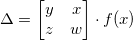
- \insertgathercaptioned{Fórmula}{Leyenda}: Inserta una fórmula con leyenda en el entorno gather.
-
\insertgathered[Label (opcional)]{Fórmula}{Leyenda}: Inserta una fórmula con leyenda en el entorno gathered, permite insertar
nuevas líneas con \\ y centra todas las fórmulas. Todas las líneas tienen sólo 1 número de ecuación por lo que esta puede tener etiqueta o un \label.
\insertgathered[\label{formula-4}]{\iint_{a}^{b} f(y) \dy}
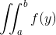
- \insertgatheredcaptioned[Label (opcional)]{Fórmula}{Leyenda}: Inserta una fórmula con leyenda en el entorno gathered.
-
\insertalign{Fórmula}: Inserta una fórmula con el entorno align el cual permite insertar nuevas líneas con \\ y ajusta un alineado especial con respecto a los = de cada fórmula. Cada nueva línea tiene un propio número de ecuación. No se pueden usar \label.
\insertalign{F(\vec{f},y, y') = \widehat{<\vec{f},y>} \times y'}
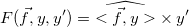
- \insertaligncaptioned{Fórmula}{Leyenda}: Inserta una fórmula con leyenda en el entorno align.
-
\insertaligned[Label (opcional)]{Fórmula}: Inserta una fórmula con el entorno aligned el cual permite insertar nuevas líneas, y ajusta un alineado especial
con respecto a los
= de cada fórmula. Todas las líneas tienen sólo 1 número de ecuación por lo que esta puede tener etiqueta o un \label.
\insertaligned[\label{formula-5}]{\sqrt[a]{b} + c}

- \insertalignedcaptioned[Label (opcional)]{Fórmula}{Leyenda}: Inserta una fórmula con leyenda en el entorno aligned.
-
\insertequation{Fórmula}: Inserta una fórmula.
-
Insertar secciones sin número y sin aparecer en el índice
También pueden añadirse secciones no numeradas (anum) que aparezcan en el índice o no (noi). Para ello existen las siguientes funciones:
- \sectionanum{Título}: Inserta una sección sin número.
- \subsectionanum{Subtítulo}: Inserta una subsección sin número.
- \subsubsectionanum{Sub-subtítulo}: Inserta una sub-subsección sin número.
- \sectionanumnoi{Título}: Inserta una sección sin número y sin que aparezca en el índice.
- \subsectionanumnoi{Subtítulo}: Inserta una subsección sin número y sin que aparezca en el índice.
- \subsubsectionanumnoi{Sub-subtítulo}: Inserta una sub-subsección sin número y sin que aparezca en el índice.
-
Expresiones matemáticas
Existen varias funciones para añadir expresiones matemáticas de forma sencilla, estas se pueden usar tanto dentro como fuera de una fórmula (por ejemplo se pueden usar dentro de un párrafo sin la necesidad de hacer $\...$).
-
\abs{a}: Valor absoluto de a.
\abs{ x + y }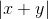
-
\norm{a}: Norma de a.
La norma de z es \norm{ z }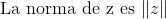
-
\pow{a}{b}: Forma simplificada de añadir una potencia del tipo a^b.
\pow{ (1 + \pow{\pi}{\epsilon}) }{2}

-
\lpow{a}{b}: Forma simplificada de añadir una sub potencia del tipo a_b.
\lpow{f}{i+1} = 2 \lpow{f}{i} + \lpow{f}{i-2}

-
\fracpartial{a}{b}: Crea una fracción de derivadas parciales del estilo ∂a/∂b.
f(x) = \fracpartial{g}{x}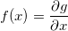
\lpow{h}{y} = 2 + \fracpartial{}{y} h
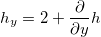
-
\fracdpartial{a}{b}: Crea una fracción de derivadas parciales al cuadrado al estilo ∂^2 a/∂b^2.
\fracdpartial{u}{t} = \pow{c}{2} \fracdpartial{u}{x}

-
\fracnpartial{a}{b}{c}: Crea una fracción de derivadas parciales a la n al estilo ∂^c a/∂b^2. \frac{\partial {f}^{n+m}}{\partial {x}^{n+m}}
=
\fracnpartial{f}{x}{n+m} = \widehat{\fracnpartial{h}{x}{n} + \fracnpartial{g}{x}{m}}
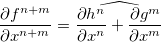
-
\fracderivat{a}{b}: Crea una fracción de derivadas del estilo da/db.
\fracderivat{}{x}\arccos(x) = -{\frac{1}{\sqrt{ 1 - \pow{x}{2} }}

-
\fracdderivat{a}{b}: Crea una fracción de derivadas al cuadrado al estilo d^2 a/db^2.
m \fracdderivat{x}{t} + kx = 0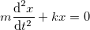
-
\fracnderivat{a}{b}{c}: Crea una fracción de derivadas a la n al estilo d^c a/db^2.
\fracnderivat{y}{x}{3} \times \fracnderivat{h}{x}{n} = \chi

-
\topequal{a}{b}: Crea una llave sobre el elemento a con valor b.
\topequal{1 + \sqrt{1+x}}{f(x)}

-
\underequal{a}{b}: Crea una llave bajo el elemento a con valor b.
\pi + \underequal{1 - \frac{1}{e}}{e \approx 2.718}
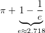
-
\topsequal{a}{b}: Crea una llave rectangular sobre el elemento a con valor b.
\topsequal{ 1+x+\ldots+\pow{x}{n} }{x \in \Re} = \sum_{i=0}^{n}\pow{x}{i}
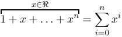
-
\undersequal{a}{b}: Crea una llave rectangular bajo el elemento a con valor b.
\lim_{n} \pow{2}{n} \undersequal{ \sqrt{2 - \sqrt{2+ \ldots + \sqrt{2}}} }{n} = \pi
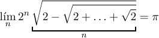
-
\abs{a}: Valor absoluto de a.
-
Insertar anexos
Para insertar anexos existe el ambiente anexo, dentro de él se pueden crear secciones, sub-secciones, etc.
\begin{anexo} \section{Cálculos realizados} \lipsum[69] % Imagen, se numerará automáticamente con la letra del anexo \insertimage{ejemplos/test-image.png}{scale=0.15}{Imagen en anexo.} \newpage \section{Otros anexos} \lipsum[1] \end{anexo}
-
Añadir referencias
Para añadir referencias el template ofrece 3 alternativas distintas: el uso de bibtex, apacite y natbib. Para usar cada uno de ellos es necesario cambiar la configuración \stylecitereferences.
- Bibtex: Es el sistema más sencillo, para insertar referencias existe el ambiente references:
- Para citar se usa \cite{ref1}\begin{references} \bibitem{ref1} Template Informe en \LaTeX. \textit{¡Revisa el manual online de este template!} \\ \url{http://ppizarror.com/Template-Informe/} \bibitem{ref2} Excel2Latex. \textit{Importa de forma sencilla tus tablas de Excel a \LaTeX.} \\ \url{https://www.ctan.org/tex-archive/support/excel2latex/} \end{references}
- Establecer configuración \stylecitereferences={bibtex}
- Apacite: Es un sistema de referencias más complejo, para ello se deben guardar las referencias en un archivo .bib como este ejemplo (references.bib), luego para insertar
las referencias y citar se realiza lo siguiente:
- Establecer configuración \stylecitereferences={apacite}Para citar de forma abreviada se usa \shortcite{braas}. Para usar citas extensas se utiliza \fullcite{braas} % La siguiente línea importa el archivo .bib donde están guardadas las referencias \bibliography{references}
- Natbib: El uso de natbib es el mismo que el de Apacite:
- Establecer configuración \stylecitereferences={natbib}Para citar de forma abreviada se usa \shortcite{baggio}. Para usar citas normales se utiliza \cite{braas} % La siguiente línea importa el archivo .bib donde están guardadas las referencias \bibliography{references}
- Bibtex: Es el sistema más sencillo, para insertar referencias existe el ambiente references:
-
Añadir código fuente
Para añadir código fuente existe el entorno sourcecode que permite añadir código de los lenguajes de programación C, Python, Matlab:
-
\begin{sourcecode}[Label (opcional)]{Lenguaje}{Leyenda}: Inserta un código fuente de un lenguaje definido (Python, Matlab, C), con leyenda.
\begin{sourcecode}[\label{codigo-python}]{Python}{Ejemplo en Python.} import numpy as np def incmatrix(genl1, genl2): m = len(genl1) n = len(genl2) M = None # Comentario 1 VT = np.zeros((n*m, 1), int) # Comentario 2 \end{sourcecode}
-
\begin{sourcecode}[Label (opcional)]{Lenguaje}{Leyenda}: Inserta un código fuente de un lenguaje definido (Python, Matlab, C), con leyenda.
-
Otras funciones
-
\beginplandscape, \endplandscape: Crea una página en modo horizontal.
\lipsum[1] ... \beginplandscape \lipsum[1] \endplandscape ...
-
\equationresize{Factor (en textwidth)}{Ecuación}: Ajusta una ecuación utilizando la función \resizebox.
\insertequation{ \equationresize{0.9}{\pow{e}{\frac{1}{x}+y}+5} }
- \insertemail{Correo}: Inserta un link de un correo con formato y dirección web válida.
- \insertemptypage: Inserta una página vacía (sin headers ni contenido).
- \insertindextitle{Título}{Margen vertical (opcional) []}: Inserta un título sólo en el índice. Nota: para utilizar esta función se debe haber creado una sección antes.
- \itemresize{Factor (en textwidth)}{Objeto}: Ajusta un objeto utilizando la función \resizebox.
- \newchapter{Título}: Inserta una sección como si fuese un capítulo.
- \quotes{Texto}: Inserta un texto entre comillas.
- \sectionanumheadless{Título}: Inserta una sección sin número y sin aparecer en el header del informe.
- \sectionanumheadlessnoi{Título}: Inserta una sección sin número, sin aparecer en el header del informe y sin aparecer en el índice.
- \setcaptionmargincm{Margen}: Modifica el margen izquierdo/derecho de los caption medido en centímetros.
-
\beginplandscape, \endplandscape: Crea una página en modo horizontal.
Configurar el template
También se pueden modificar los márgenes de la página, el estilo de referencia a usar, los márgenes de los títulos de tablas y figuras (caption), el tamaño de los títulos de las secciones, etc. Estas configuraciones se encuentran
en el archivo
lib/config.tex (versión normal) y son importadas en el bloque de
CONFIGURACIONES en el archivo principal.
Las configuraciones disponibles son las siguientes:
-
Configuraciones generales
- \addemptypagetwosides: Añade páginas en blanco después de la portada, el resumen y el índice de manera inteligente al imprimir en doble cara. El índice siempre se imprimirá en una plana impar, así como el contenido del informe.
- \columnsepwidth: Separación de las columnas, en em.
- \defaultinterline: Tamaño del interlineado.
- \defaultnewlinesize: Tamaño del salto de línea, en pt.
- \documentlang: Define el idioma del documento.
- \fontdocument: Define la fuente de todo el texto del documento (lmodern, arial, helvet).
- \numberedequation: Muestra el número en las ecuaciones insertadas con \insert....
- \pointdecimal: Los números decimales se muestran con punto en vez de con coma.
- \romanpageuppercase: Páginas en número romano (abstract-índice) en mayúsculas.
- \showlinenumbers: Muestra los números de línea del documento.
- \tablepadding: Ancho de celda de las tablas.
-
Estilo de portada y header-footer
- \hfstyle: Estilo del encabezado y pie de página (header-footer), existen 8 estilos distintos.
- \portraitstyle: Estilo de la portada, existen 16 estilos distintos.
-
Márgenes de la página
- \firstpagemargintop: Margen superior de la portada en centímetros.
- \pagemarginbottom: Margen inferior de las páginas en centímetros.
- \pagemarginleft: Margen izquierdo de las páginas en centímetros.
- \pagemarginright: Margen derecho de las páginas en centímetros.
- \pagemargintop: Margen superior de las páginas en centímetros.
-
Configuración de las leyendas - caption
- \captionalignment: Alineación leyenda: justified, centered, left, right.
- \captionlessmarginimage: Margen inferior si no hay caption en figuras, en centímetros.
- \captionlrmargin: Márgen izquierdo (left) y derecho (right) de las leyendas, en centímetros.
- \captiontbmarginfigure: Margen superior/inferior de la leyenda en las figuras, en pt.
- \captiontbmargintable: Margen superior/inferior de la leyenda en las tablas, en pt.
- \captiontextbold: Etiquetas (Figura,Tabla,etc.) de la leyenda en negrita.
- \codecaptiontop: Establece la leyenda encima del código fuente.
- \figurecaptiontop: Establece la leyenda encima de las imágenes.
- \showsectioncaption: Muestra el número de la sección/subsección/subsubsección en el número de figura/tabla/código, valores permitidos: none, sec (Sección), ssec (Subsección), sssec (Sub-subsección).
- \tablecaptiontop: Establece la leyenda encima de las tablas.
-
Configuración del índice
- \charafterobjectindex: Carácter tras cada número de figura, tabla o código en el índice.
- \indexdepth: Profundidad del índice.
- \indextitlemargin: Margen superior en los títulos de los índices (insertado con \insertindextitle), en pt.
- \showdotpagenumindex: Muestra puntos entre objeto y número de página.
- \showindex: Muestra la página de índice.
- \showindexofcode: Muestra la lista de códigos fuente en el índice.
- \showindexofcontents: Muestra la lista de contenidos.
- \showindexoffigures: Muestra la lista de figuras en el índice.
- \showindexoftables: Muestra la lista de tablas en el índice.
-
Configurar los colores del documento
- \captioncolor: Color de la etiqueta (Figura, Tabla, Código) en la leyenda de los objetos.
- \captiontextcolor: Color de la leyenda de los objetos.
- \colorpage: Define el color de fondo de las páginas del documento.
- \highlightcolor: Color del subrayado con \hl{text}.
- \indextitlecolor: Color de los títulos del índice.
- \linenumbercolor: Color del número de línea (Al tener activado \showlinenumbers).
- \linkcolor: Color de los enlaces del documento, entiendase por números de figuras, entradas del índice, etc.
- \maintextcolor: Color del texto del documento, afecta al color de los títulos, párrafos, líneas, tablas, etc.
- \numcitecolor: Color del número de las referencias o citas.
- \portraittitlecolor: Color de los títulos de la portada.
- \showborderonlinks: Reemplaza el color de un link por un recuadro de color.
- \subsubtitlecolor: Color de los sub-subtítulos.
- \subtitlecolor: Color de los subtítulos.
- \tablelinecolor: Color de las líneas de las tablas.
- \titlecolor: Color de los títulos.
- \urlcolor: Color de los enlaces http:// del documento insertados con \url y \href.
-
Configuración de las figuras
- \defaultimagefolder: Directorio de las imágenes, sólo utilizado por las funciones que insertan figuras.
- \marginbottomimages: Margen inferior de las figuras, en centímetros.
- \marginfloatimages: Margen superior de las figuras flotantes (insertadas con \insertimageleft o \insertimageright), en pt.
- \margintopimages: Margen superior de las figuras, en centímetros.
-
Configuración del anexo, citas y referencias
- \apaciterefsep: Separación entre elementos de las referencias (Estilo apaciteb), en pt.
- \appendixindepobjnum: La numeración de los objetos (figura, tabla, código) en la sección de anexo/apéndice es independiente del documento.
- \bibtexrefsep: Separación entre elementos de las referencias (Estilo bibtex), en pt.
- \donumrefsection: Sección de referencias numerada en el informe.
- \natbibrefsep: Separación entre elementos de las referencias (Estilo natbib), en pt.
- \sectionappendixlastchar: Carácter entre el número de la sección del anexo y el título.
- \showappendixsecindex: Muestra el título de la sección de anexos en el índice.
- \showappendixsectitle: Muestra el título de la sección de anexo en el informe.
- \twocolumnreferences: Referencias en dos columnas.
-
Configuración de los títulos
- \anumsecaddtocounter: Las funciones para insertar títulos sin número (anum) aumentan los respectivos contadores.
- \fontsizesubsubtitle: Tamaño sub-subtítulos.
- \fontsizesubtitle: Tamaño subtítulos.
- \fontsizetitle: Tamaño títulos.
- \fontsizetitlei: Tamaño títulos en el índice.
- \showdotontitles: Muestra un punto en cada número de sección, subsección y sub-subsección.
- \stylesubsubtitle: Estilo sub-subtítulos.
- \stylesubtitle: Estilo subtítulos.
- \styletitle: Estilo títulos.
- \styletitlei: Estilo títulos en el índice.
-
Opciones del pdf
- \addindextobookmarks: Añade el índice a los marcadores del pdf compilado.
- \cfgbookmarksopenlevel: Nivel de los marcadores a mostrar (1: secciones, 2: muestra todos los subtítulos, etc.).
- \cfgpdfbookmarkopen: Expande los marcadores hasta el nivel configurado.
- \cfgpdfcenterwindow: Centra la ventana del lector pdf al abrir el informe.
- \cfgpdfcopyright: Establece el copyright en la metadata del pdf.
- \cfgpdfdisplaydoctitle: Muestra el título del informe como título en el lector del pdf.
- \cfgpdffitwindow: Ajusta la ventana del lector pdf al tamaño del informe.
- \cfgpdfmenubar: Muestra la barra de menú en el lector pdf.
- \cfgpdfpagemode: Modo de página en el lector. Valores esperados: OneColumn,SinglePage.
- \cfgpdfpageview: Establece cómo se ve la página en el lector pdf, valores esperados: Fit,FitH,FitV,FitR,FitB,FitBH,FitBV.
- \cfgpdfsecnumbookmarks: Muestra el número de la sección en los marcadores del pdf.
- \cfgpdftoolbar: Muestra la barra de herramientas del lector pdf.
- \cfgshowbookmarkmenu: Muestra el menú de los marcadores en el lector pdf.
- \pdfcompileversion: Establece la versión mínima de compatibilidad del pdf.
-
Nombres de los elementos
- \nameabstract: Nombre del resumen-abstract.
- \nameappendixsection: Nombre de la sección de anexos/apéndices.
- \nameportraitpage: Nombre de la primera página (portada) en el pdf.
- \namereferences: Nombre de la sección de referencias.
- \nomchapter: Nombre de los capítulos.
- \nomltappendixsection: Etiqueta sección en anexo/apéndices.
- \nomltcont: Nombre del índice de contenidos.
- \nomltfigure: Nombre de la lista de figuras.
- \nomltsrc: Nombre de la lista de código fuente.
- \nomlttable: Nombre de la lista de tablas.
- \nomltwsrc: Etiqueta leyenda del código fuente.
- \nomltwfigure: Etiqueta leyenda de las figuras.
- \nomltwtable: Etiqueta leyenda de las tablas.
Links de interés
-
Template Auxiliares en : http://latex.ppizarror.com/Template-Auxiliares/
- Manual para usar Latex: https://es.sharelatex.com/learn
-
Plugin para expotar tablas desde Excel: https://www.ctan.org/pkg/excel2latex
- Descargar el plugin y extraer el zip
-
Pegar los contenidos del zip en C:\Users\UserName\AppData\Roaming\Microsoft\AddIns
- Si no encuentras la carpeta Appdata: Pulsa +R → Escribe appdata → Aceptar (ejemplo)
- Abrir el archivo Excel2LaTeX.xla con Excel
- Abrir el plugin ubicado en Complementos → Convert Table to Latex
- Configurar el plugin a gusto (ejemplo)
-
Editor Latex online (Sharelatex): https://www.sharelatex.com/
- En ShareLatex: Menú principal → New project → Upload project → Seleccionar el .zip descargado del template
-
Editor Latex online (Overleaf): https://www.overleaf.com/
- En Overleaf: My projects → Upload zip → Seleccionar el .zip descargado del template
- Editor de Latex para Windows : http://www.texstudio.org/
{kind=link}
{kind=link}
Librerías utilizadas
- array: Añade características extras a las tablas.
- amsmath: Librería matemática.
- amssymb: Librería matemática.
- apacite: Administración de citas.
- array: Añade características a las tablas.
- babel: Soporte para idiomas.
- bibtex: Administración de referencias.
- bigstrut: Permite añadir líneas en tablas.
- bm: Caracteres en negrita en ecuaciones.
- booktabs: Permite manejar elementos visuales en tablas.
- cancel: Cancelar términos en fórmulas.
- caption: Leyendas.
- changepage: Condicionales para administrar páginas.
- chngcntr: Agrega números de secciones a las leyendas.
- colortbl: Colores en las tablas.
- color: Colores.
- csquotes: Citas y comillas.
- datetime: Fechas.
- enumitem: Permite enumerar ítemes.
- etoolbox: Herramientas varias del compilador.
- fancyhdr: Encabezados y pie de páginas.
- floatpag: Maneja números de páginas.
- floatrow: Administración de floats.
- float: Administrador de posiciones de objetos.
- fontenc: Soporta caracteres acentuados.
- footmisc: Elimina la barra vertical de las notas al pié de página.
- framed: Permite insertar recuadros.
- gensymb: Simbología común.
- geometry: Dimensiones y geometría del documento.
- graphicx: Propiedades extra para los gráficos.
- hyperref: Permite añadir enlaces y referencias [dependiente].
- hyperxmp: Etiquetas opcionales en el metadata del pdf compilado.
- ifthen: Permite el manejo de condicionales.
- mathtools: Permite utilizar notaciones matemáticas avanzadas.
- multicol: Múltiples columnas.
- multirow: Añade nuevas opciones a las tablas.
- natbib: Administración de citas.
- needspace: Maneja espacios en páginas.
- notoccite: Desactiva las citas en el índice.
- lipsum: Permite crear párrafos de prueba.
- listings: Permite añadir código fuente.
- longtable: Permite utilizar tablas en varias hojas.
- lscape: Permite insertar páginas en modo horizontal.
- pdfpages: Permite administrar páginas en pdf.
- physics: Importa funciones matemáticas esenciales.
- rotating: Permite rotación de objetos.
- secdot: Agrega puntos a los títulos/subtítulos.
- sectsty: Cambia el estilo de los títulos.
- setspace: Cambia el espacio entre líneas.
- siunitx: Permite añadir unidades del sistema internacional.
- soul: Permite subrayar texto.
- subfig: Permite agrupar imágenes.
- textcomp: Simbología.
- titlesec: Configuración de los titulos.
- tocloft: Manejo de entradas en la tabla de contenidos.
- totalcount: Permite contar elementos.
- tikz: Permite dibujar.
- ulem: Permite cachar, subrayar, etc.
- url: Permite añadir enlaces.
- wasysym: Contiene caracteres misceláneos.
- wrapfig: Permite comprimir imágenes.
- xcolor: Paquete de colores avanzado.
- xspace: Adminisitra espacios en párrafos y líneas.
Changelog
Autor
Pablo Pizarro R. | 2016 - 2018
Si tienes alguna sugerencia envíame un correo a: pablo.pizarro@ing.uchile.cl.